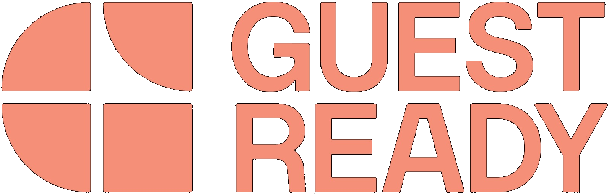

Selected finance & data projects.
Three projects showing how I combine finance, data and analysis to structure information, apply sound finance logic and turn validated insights into decision support.

OPEX Forecasting & Variance Analysis
Built driver-based monthly OPEX forecasts, validated supplier-cost assumptions and investigated forecast-versus-actual movements across a €125K+ monthly scope.
Month-End Accrual & Close Support
Supported period-end accrual logic, GL and cost-centre allocation, supplier reconciliation and subsequent checks, including €10K-€15K of operational costs reconciled.
Financial Institution Dashboard
Built regional reporting solutions across 15+ business units, standardised 16+ KPIs and translated exposure data into stakeholder-ready dashboards.
Evidence before decoration.
Each project is presented around the finance question, the work performed, the tools used and the measurable output. The case studies separate the business question, finance logic, controls and measurable output. Illustrative visuals are clearly marked where company data is confidential.